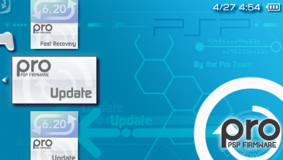
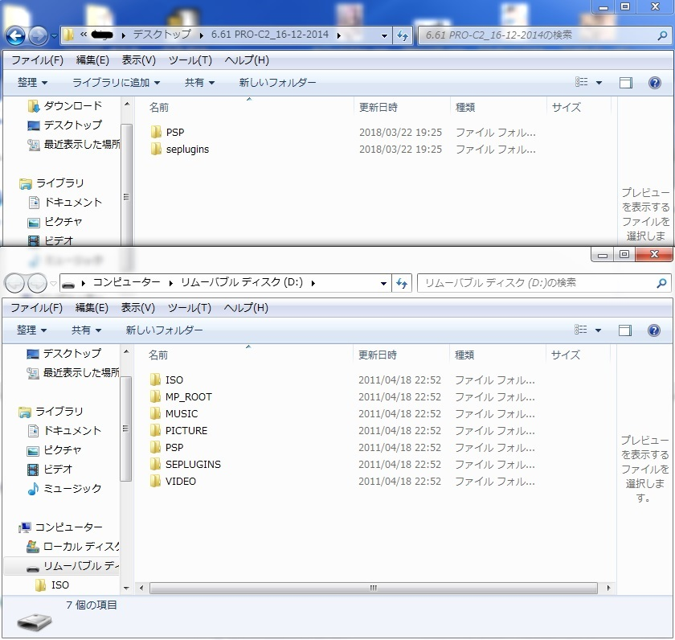
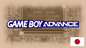
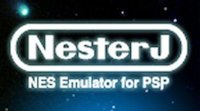
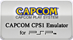
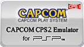
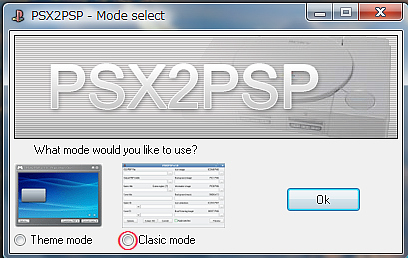
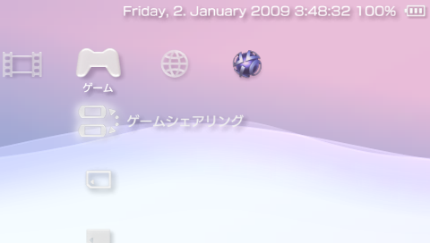
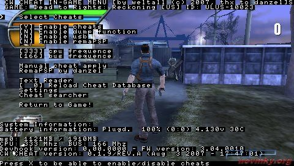
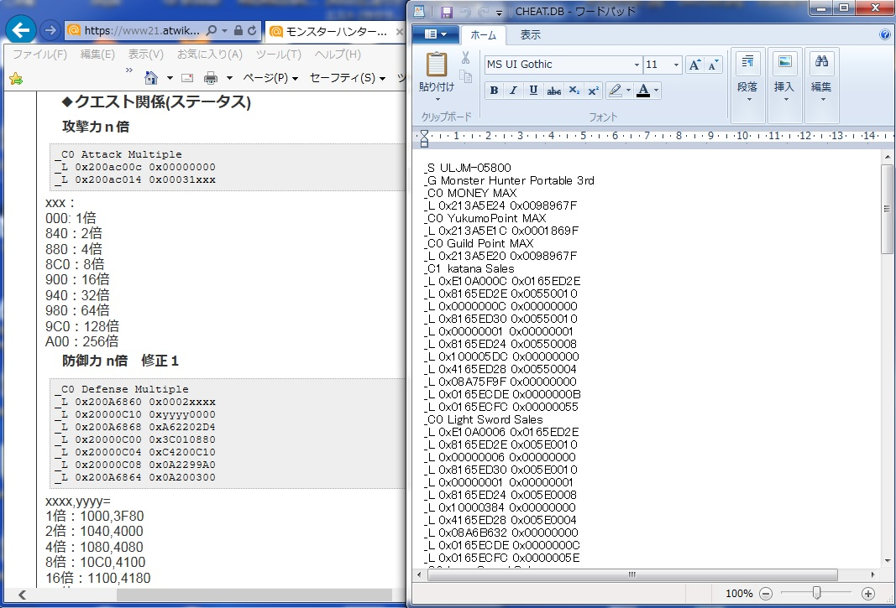

目次
- なぜPSPが最強の携帯ゲーム機なのか
- CFW (カスタムファームウェア)
- エミュレータ (PCエンジン/ワンダースワン/ファミコン/ゲームボーイ/ネオジオポケット/ゲームギア)
- エミュレータ (ゲームボーイアドバンス)
- エミュレータ (スーパーファミコン)
- エミュレータ (ファミコン/ディスクシステム)
- エミュレータ (メガドライブ)
- エミュレータ (セガマスターシステム/ゲームギア)
- エミュレータ (CPS1)
- エミュレータ (CPS2)
- エミュレータ (MVS)
- コンバータ (PlayStation)
- いつでも♪でスクリーンショット撮れるプラグイン
- 日付やバッテリー表示を強化するプラグイン
- チートツール
なぜPSPが最強の携帯ゲーム機なのか

最近では、ニンテンドークラシックミニやメガドライブミニなど昔のゲーム機がリニューアルされて発売されるなど、昔のゲームが注目されています。実は、PSPは携帯ゲーム機でありながら性能面ではPS1以上のスペックがあり、成熟したカスタムファームウェア (CFW) と多くのエミュレータを導入することで、スーパーファミコン、メガドライブ、PCエンジンやネオジオのゲームまで遊ぶことが出来ます。
PSP以降に発売された高性能なPlayStation Vita、Nintendo 3DSでは未だハッキングが難しく、エミュレータも満足に無い状況から見ると、まだまだカスタム性においてPSPには及びません。
このページでは、そんなPSPを最強の携帯ゲーム機にカスタムする方法を紹介します。
CFW (カスタムファームウェア)

ファームウェアとはPSPを動かすシステムソフトウェアのことです。サードパーティー製の (SONY以外のところが作った) ファームウェアをカスタムファームウェア (CWF) と言います。ちなみに公式のものをOFW (オフィシャルファームウェア) と言います。CFWでは、OFWで制限されていることが出来るようになります。例えば、ユーザー作成のアプリケーションやチートツール、エミュレーター等が起動出来るようになったりします。ここでは、CFW6.61 PROの導入手順を説明します。
まず、PCに 6.61 PRO-C2_16-12-2014.zip をダウンロードし、圧縮ファイルを解凍します。次に、USBケーブルでPSPとPCを繋ぎ、設定からPSPをUSB接続モードにします。そして解凍したフォルダー内のPSPフォルダーをコピーし、PSPのメモリースティックに貼り付けします。

エミュレータ (PCエンジン/ワンダースワン/ファミコン/ゲームボーイ/ネオジオポケット/ゲームギア)
ここではPCエンジン/ワンダースワン/ファミコン/ゲームボーイ/ネオジオポケット/ゲームギアに対応している e[mulator] for PSP の導入を説明します。
まずe[mulator]公式サイトからe[mulator] 0.82f for PSPをダウンロードして解凍します。
「PSP」フォルダを「e[mulator] 」にリネームして「e[mulator] 」フォルダ内に「ROMS」フォルダを作成します。※管理をしやすいようにリネームします。特にリネームしなくても認識はします。
「ROMS」フォルダ内に {PCエンジン/ワンダースワン/ファミコン/ゲームボーイ/ネオジオポケット/ゲームギア} のROMファイルをコピーします。※zipファイルのままでも起動します。
「e[mulator]」フォルダを メモリースティック の「GAME」フォルダにコピーします。
PSPを起動させ、メモリースティックから「e[mulator] for PSP 0.82f」を起動します。
メニュー画面が表示されますが、まずは遊びたいゲーム機の設定で空いてるボタンに "MENU" を割り当てると便利です。そして「ROM SELECT」から 「ROMS」フォルダを選んで遊びたいゲームを決定します。
エミュレータ (ゲームボーイアドバンス)

ここではゲームボーイアドバンス (GBA) のエミュレータである gpSP-J の導入を説明します。gpSP-Jは無改造のPSPでも動作します。再現性が非常に高くほぼ全てのROMが動作します。メニューが日本語なので設定も分かりやすく使いやすいと思いますが、GBAのBIOSが要ります。
まずロルドの研究室アップローダーからgpsp-jをダウンロードして解凍します。
解凍したフォルダ内にある「gpsp-J」フォルダ内にBIOSファイル (gba_bios.binという名前に変えておく）を入れます。
ROMファイルをgpSP-Jの「roms」フォルダに入れます。
gpSP-Jのフォルダをメモリースティックの「GAME」フォルダにコピーします。
PSPを起動させ、メモリースティックから「gameplaySP - 日本語版」を起動します。
エミュレータ (スーパーファミコン)
- s9xTYLmecm_mod.zip をダウンロードして解凍します。
- 解凍した後フォルダ内に「ROMS」フォルダを作ってそこにROMを入れます。
- そして解凍したフォルダをコピーしてメモリースティックの「PSP」フォルダ内の「GAME」フォルダの中に入れます。
エミュレータ (ファミコン/ディスクシステム)

- Nintendo- NesterJ AoEX r3.zip をダウンロードして解凍します。
- 解凍した後フォルダ内にある「Roms」フォルダにROMを入れます。
- そして解凍したフォルダをコピーしてメモリースティックの「PSP」フォルダ内の「GAME」フォルダの中に入れます。
エミュレータ (メガドライブ)
- DGEN v1.70 Slim をダウンロードして解凍します。
- 解凍した後フォルダ内に「ROMS」フォルダを作ってそこにROMを入れます。
- そして解凍したフォルダをコピーしてメモリースティックの「PSP」フォルダ内の「GAME」フォルダの中に入れます。
エミュレータ (セガマスターシステム/ゲームギア)

- smsplus-1.3.1-1.0.zip をダウンロードして解凍します。
- 解凍した後フォルダ内にある「smsppsp」フォルダ内に「ROMS」フォルダを作ってそこにROMを入れます。
- そして「smsppsp」フォルダをコピーしてメモリースティックの「PSP」フォルダ内の「GAME」フォルダの中に入れます。
エミュレータ (CPS1)

日本人のNJ氏が開発したアーケードエミュレータです。CPS1PSPはCPS1を遊ぶことができます。ほぼ全てのROMが動作するのでカプコン好きには嬉しい。もちろん日本語対応なので安心して利用できます。
- Unofficial CAPCOM CPS1 Emulator for PSP 2.3.1 Mod Rev.5 をダウンロードして解凍します。
- 解凍した後フォルダ内にある「cps1psp」フォルダ内に「ROMS」フォルダを作ってそこにROMを入れます。
- そして「cps1psp」フォルダをコピーしてメモリースティックの「PSP」フォルダ内の「GAME」フォルダの中に入れます。
エミュレータ (CPS2)

日本人のNJ氏が開発したアーケードエミュレータです。CPS2PSPはCPS2を遊ぶことができます。ほぼ全てのROMが動作するのでカプコン好きには嬉しい。もちろん日本語対応なので安心して利用できます。
- Unofficial CAPCOM CPS2 Emulator for PSP 2.3.1 Mod Rev.5 をダウンロードして解凍します。
- 解凍した後フォルダ内にある「cps2psp」フォルダ内に「ROMS」フォルダを作ってそこにROMを入れます。
- そして「cps2psp」フォルダをコピーしてメモリースティックの「PSP」フォルダ内の「GAME」フォルダの中に入れます。
エミュレータ (MVS)
SNKのアーケードゲームMVSのエミュレータです。ROM の形式はZIP形式のファイルになります。また、同時にキャッシュファイルの作成も行わないと正常に ROM を読み込みませんので必ずキャッシュファイル作成を行って下さい。
- Unofficial NEOGEO Emulator for PSP 2.3.1 Mod Rev.5 をダウンロードして解凍します。
- 解凍した後フォルダ内にある「mvspsp」フォルダ内に「ROMS」フォルダを作ってそこに遊びたいROMを入れます。また、neogeo.zipも「ROMS」フォルダに入れます。
- キャッシュファイルの作成を行います。解凍した「romcnv」フォルダ内にある「romcnv_mvs.exe」を起動させます。ネオジオのROMファイル[例：game.zip]をドラッグ・アンド・ドロップし、キャッシュファイル変換作業を開始します。完了すれば、「romcnv」フォルダ内に「cache」フォルダが作成されます。
- 変換完了した「cache」フォルダを「mvspsp」フォルダへコピーします。
- そして「mvspsp」フォルダをコピーしてメモリースティックの「PSP」フォルダ内の「GAME」フォルダの中に入れます。
コンバータ (PlayStation)

PS1のソフトをPSPで遊べるように変換するPSX2PSPの紹介です。
- ロルドの研究室アップローダーからPSX2PSPをダウンロードして解凍します。
- PSX2PSP.exeを起動します。
- 「clasic mode」を選択し、okを押します。
- 左上の「ISO/PBP file」の→の ... を押します。
- そこからPS1のイメージファイルを選択(.img)(.bin) 2個以上ファイルがある場合は続けて選択
- 「Oulput PBP folder」の→の ... を押します。そこに変換後のフォルダが来ます。また「Icon image」はXMBでのアイコンを指定できます。アイコンはこのサイトにたくさんあります。
- 「Corvelt」を押します。変換が始まります。
- 「Done!」が出れば終了。
- 指定した所にフォルダがあります。
- PSPをUSB接続します。
- リムーバルディスク→PSP→GAMEに変換したフォルダをコピー
- XMBから起動
いつでも♪でスクリーンショット撮れるプラグイン
ゲームごとに保存するフォルダを分けてスクリーンショットが撮れる「RRXshot v0.4.0」の導入方法について説明します。
- prxshot-0.4.0.zip をダウンロードして解凍します。
- 解凍した後、出てきた「prxshot」フォルダを「ms0(ef0):/seplugins/」に入れます。
- 「ms0(ef0):/seplugins/」の「vsh.txt、game.txt」に下記を追記します。
- PSP-1000/2000/3000の場合 ms0:/seplugins/prxshot/prxshot.prx 1
- PSP Go の場合 ef0:/seplugins/prxshot/prxshot.prx 1
- ♪ボタンを押してスクリーンショットを撮ります。
- XMBのフォトで、スクリーンショットを確認し、タイトル別に保存されていれば成功です。
日付やバッテリー表示を強化するプラグイン

PSPの残りバッテリー表示や日付表示を上の画像のように強化できる「DayViewer」の導入方法について説明します。
- DayViewer をダウンロードして解凍します。
- 解凍して出来たフォルダの中にある、「seplugins」 フォルダ内の 「dayviewer.prx」 ファイルと、「dayviewer.txt」 ファイルを、メモリースティックの「seplugins」フォルダにコピーします。
- 「seplugins」 フォルダにある、「vsh.txt」 に次の記述を追記して上書き保存します。 ms0:/seplugins/dayviewer.prx 1
- CFWを再起動し、DayViewer が無事動作しているか確認してください。
チートツール

CWCheat660ME.zip をダウンロードして圧縮ファイルを解凍します。 解凍されたフォルダ内にある "CWCHEAT" フォルダをコピーして、メモリースティックの "seplugins" フォルダにコピーします。次にsepluginsフォルダにある "game.txt" と "pops.txt" を開き、以下のように書き込み保存します。
game.txtには ms0:/seplugins/cwcheat/cwcheat.prx
pops.txtには ms0:/seplugins/cwcheat/cwcheatpops.prx
CWCheat Code まとめ Wiki CODE追加方法 の記事を参考に CWCheat Code を作成してみましょう。ネットで CWCheat と検索すれば、設定方法がたくさんでてきます。

画像左: サイトのコード, 画像右: cheat.db
ms0:/seplugins/cwcheat/cheat.db を開きます。次に紹介するサイトで目的のコードをコピーしてcheat.dbに貼り付けていきます。
自力でのCheatの作成は難しいので以下のサイトから、Cheatを使いたいゲームを選択しCheatCodeをコピーして使用しましょう。